Это руководство объясняет, как работать с админ‑панелью MoonShine: где находится каждый раздел, что означает каждое поле, и как безопасно вносить изменения, чтобы они корректно отображались на сайте.
Админ‑панель — это интерфейс управления данными (сущностями) проекта: страницами, новостями, продуктами, формами, заявками и настройками сайта.
Карта сущностей (что с чем связано)
Ниже — упрощённая схема, которая помогает понимать последствия изменений:
Pages → основной конструктор контента страниц сайта (страницы состоят из блоков).
страница может быть Static (обычная) или Product landing (продуктовая, связана с продуктом).
Articles ↔︎ Article Categories → новости/публикации и их категории (категории могут быть вложенными).
Games ↔︎ Game Categories → игры и категории игр (используются для подборок/выводов в блоках страниц).
Products → базовая сущность продукта.
Product Variants → варианты/комплектации продукта (обычно выводятся на продуктовых страницах).
Product Attributes → справочник характеристик; значения атрибутов заполняются на вариантах.
Forms → продукт может быть связан с формой (CTA “Get a quote/Live demo”).
Forms → шаблоны форм → Leads → заявки (результат отправки форм с сайта).
Site settings → единые контакты/соцсети/логотип и прочие общие настройки.
Menus → наборы меню (header/footer) → Menu Items → пункты меню в виде дерева.
Дополнительно: Store Products/Store Categories (если используется магазин), Reviews, Trusted Logos, Sensory Room Bundles, Team.
Важно
Перед началом работы убедитесь, что у вас есть доступ (логин/пароль) к админ‑панели. Пароли обычно выдаются отдельно и не публикуются в документации.
Все изменения вступают в силу после сохранения. Для сущностей со статусом (draft/published) дополнительно проверьте статус публикации.
После изменений всегда проверяйте результат на сайте (в новой вкладке) — так вы сразу увидите, что контент отображается правильно.
Доступ и вход
Адрес админ‑панели
Админ‑панель доступна по адресу: /admin
Пример (локально): http://localhost:8080/admin
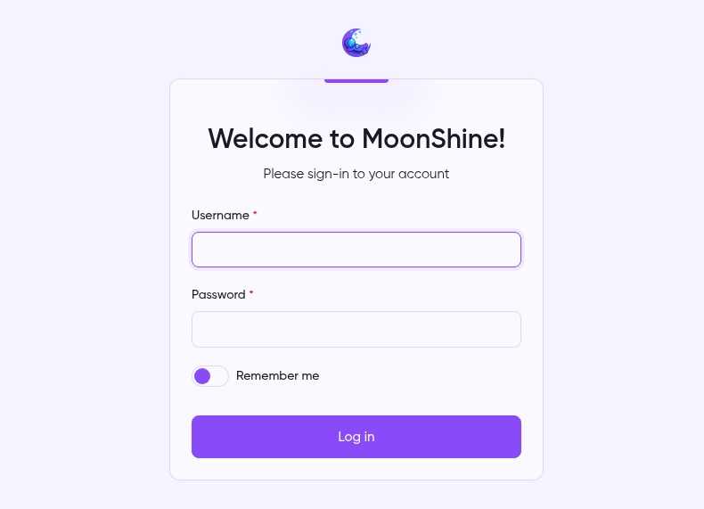
Экран входа в админ‑панель
Вход
Откройте /admin.
Введите Username и Password (учётные данные выдаются администратором).
Нажмите Log in.
Выход
Нажмите на аватар/кнопку пользователя в правом верхнем углу.
Нажмите Log out.
Интерфейс: как ориентироваться
Главный экран и меню
После входа вы попадаете на Dashboard. Слева — боковое меню со всеми сущностями.
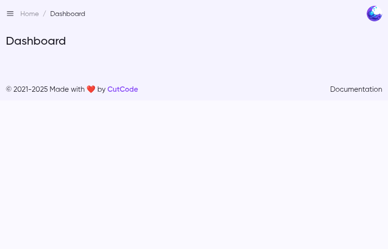
Dashboard
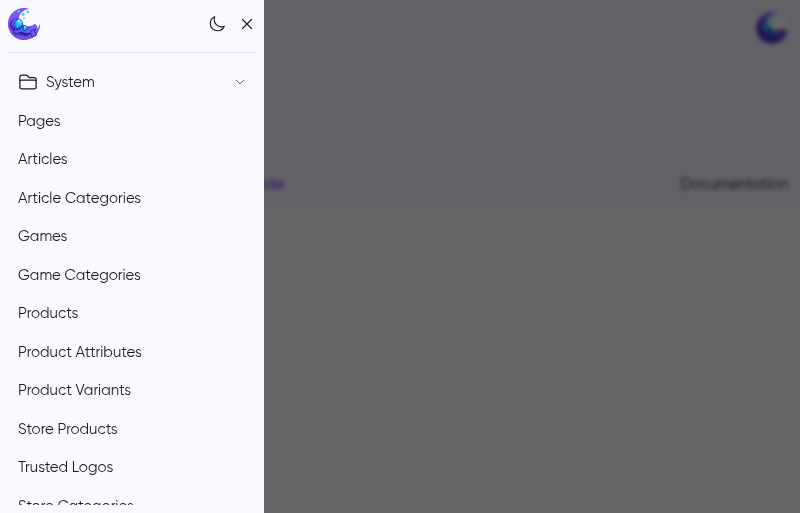
Боковое меню (основные разделы)
Системный раздел (доступы)
В верхней части меню есть раздел System. Он отвечает за администраторов и роли (права доступа).
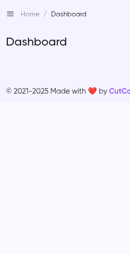
System → Admins/Roles
Типовые элементы страниц
Во всех разделах MoonShine встречаются одинаковые элементы:
Search — строка поиска по списку сущностей.
Create — создать новую запись.
Иконки действий в таблице:
просмотр (обычно «глаз»),
редактирование («карандаш»),
удаление («корзина»).
Save — сохранить изменения на форме.
Публикация и проверка изменений
Статусы (draft/published)
Некоторые сущности (например, страницы и материалы) имеют статус. Логика обычно такая:
draft — черновик, может не отображаться на сайте (или отображаться ограниченно).
published — опубликовано и отображается на сайте.
Рекомендация: после сохранения всегда проверьте, что нужный статус выставлен корректно.
Проверка результата на сайте
Практика, которая экономит время:
Сохраните изменения в админ‑панели (Save).
Откройте соответствующую страницу на сайте (по URL/slug).
Проверьте отображение (текст, картинки, порядок блоков, ссылки).
Общие сценарии работы
Создание записи
Откройте нужный раздел в меню слева.
Нажмите Create.
Заполните обязательные поля (обычно помечены *).
Нажмите Save.
Редактирование записи
Откройте раздел.
В таблице найдите запись (по поиску/фильтрам).
Нажмите Edit.
Внесите изменения → Save.
Удаление записи
Откройте раздел.
Нажмите иконку удаления у записи.
Подтвердите действие.
Рекомендация: перед удалением убедитесь, что запись нигде не используется (например, статья может быть привязана к странице или категориям).
Загрузка изображений и файлов
Во многих сущностях есть поля типа Image/File:
Нажмите в поле загрузки и выберите файл.
После сохранения файл будет храниться в системе.
Если доступна кнопка удаления (Remove), можно удалить файл из поля и сохранить запись.
Деревья (иерархии)
Часть сущностей управляется в виде дерева (родитель → дочерние элементы). В таких разделах обычно:
элементы можно раскрывать/сворачивать,
порядок (position) влияет на сортировку,
у элемента может быть Parent (родитель).
Сущности и разделы (по меню)
Ниже приведены ключевые разделы админ‑панели и их назначение.
Pages (Страницы)
Назначение: управление страницами сайта и их блоками (конструктор блоков).
Где используется на сайте: главная / и маркетинговые страницы /{slug} (в зависимости от типа страницы).
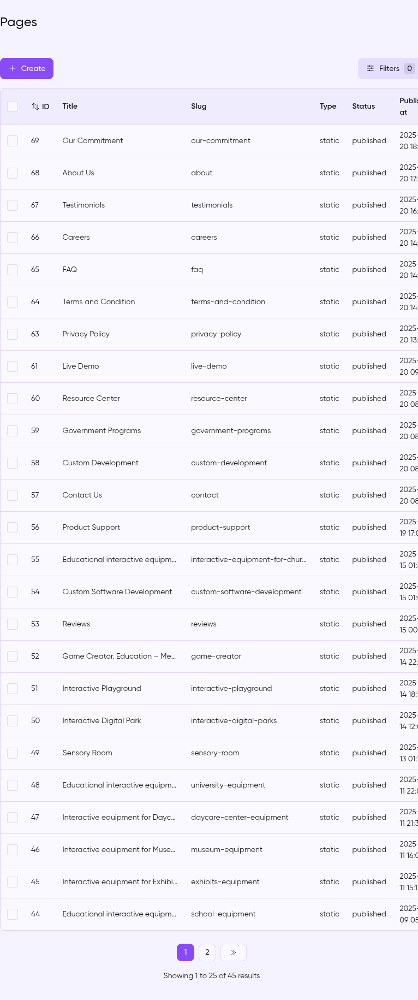
Pages — список
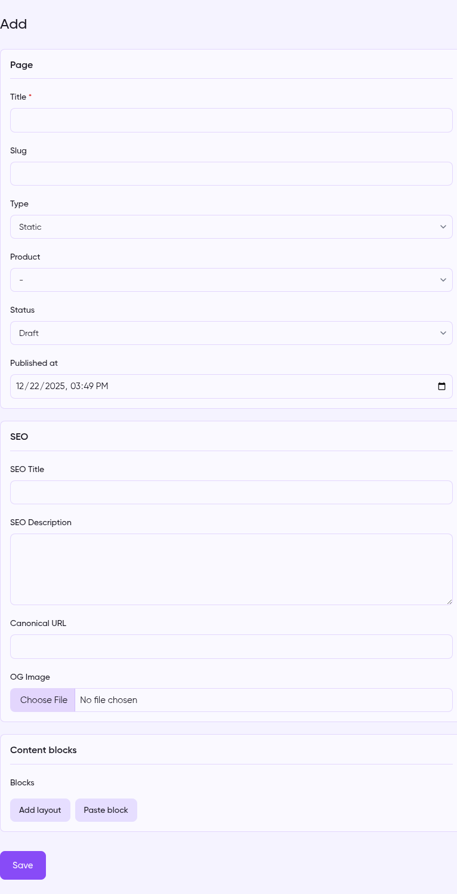
Pages — форма редактирования
Ключевые поля
Slug — адрес страницы (например, home для главной).
Title — заголовок страницы.
Type — тип страницы (например, статическая или продуктовая).
Status — черновик/публикация.
Blocks — набор блоков (контент‑конструктор).
SEO — мета‑поля для поисковых систем (если заполнены).
Slug: как влияет на адрес страницы
slug=home используется как главная страница сайта (/).
Любой другой slug обычно соответствует адресу /{slug}.
Рекомендация: используйте короткие slug латиницей, без пробелов. Следите за уникальностью.
Type: статическая vs продуктовая
Тип страницы влияет на то, какие данные и блоки участвуют в рендере:
Static — обычная страница: контент полностью задаётся блоками (Blocks).
Product landing — продуктовая: может быть связана с Product и/или формой (CTA), и на сайте дополнительно может выводиться “hero” продукта/варианты (в зависимости от конфигурации блоков).
Если страница “не выглядит как ожидалось”, проверьте:
правильный Type,
заполнен ли связанный Product (если нужен),
не дублируется ли hero/CTA (например, одновременно в блоках и автогенерацией).
Работа с блоками (Blocks)
В блоках нажмите Add layout и выберите нужный блок.
Заполните поля блока.
Сохраните страницу (Save).
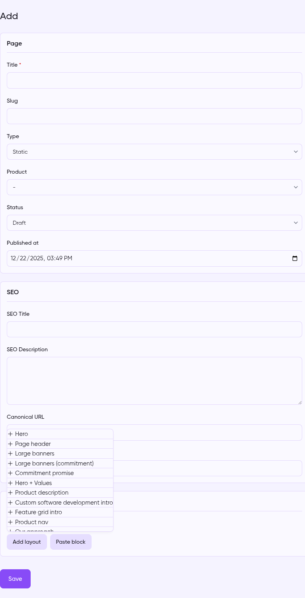
Добавление блока (Add layout)
Дополнительные возможности конструктора:
Перетаскивание: блоки можно менять местами (порядок влияет на отображение на сайте).
Copy/Paste: у блоков может быть быстрый перенос (копирование блока и вставка на другую страницу) — удобно для повторяющихся секций.
Рекомендация: вносите изменения небольшими порциями и сразу проверяйте страницу на сайте по её slug.
Articles (Новости/публикации)
Назначение: управление публикациями/новостями.
Где используется на сайте: раздел новостей (например, /news и страницы статей).
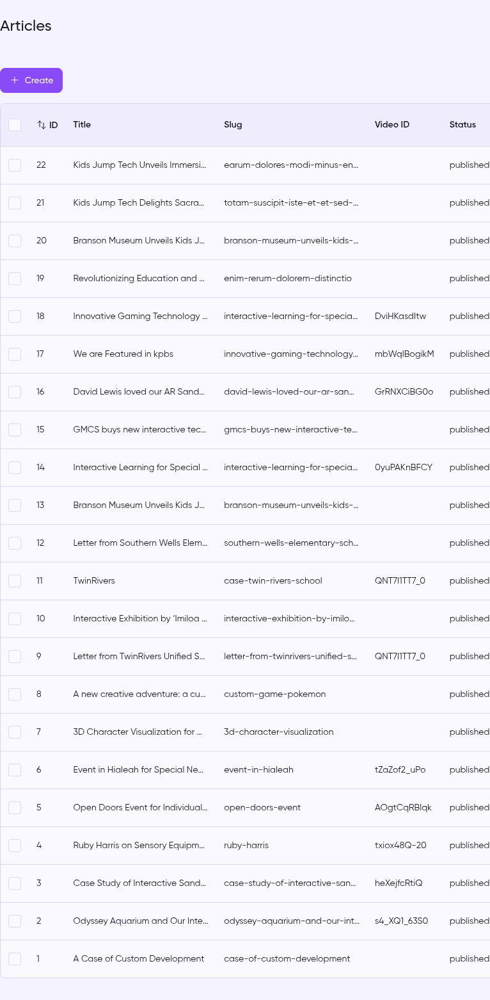
Articles — список
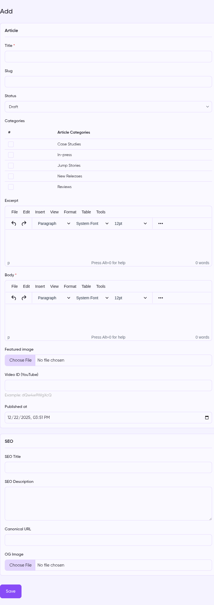
Articles — форма редактирования
Ключевые поля
Title — заголовок.
Slug — адрес статьи (часть URL).
Excerpt — короткое описание (анонс).
Body — основной текст (WYSIWYG‑редактор).
Featured image — обложка.
Video ID — если указан, на сайте может отображаться YouTube‑видео.
Categories — категории статьи.
Status / Published at — публикация и дата публикации.
Рекомендация: если статья не видна на сайте, проверьте статус публикации и published_at.
Article Categories (Категории статей)
Назначение: категории для фильтрации и структуры новостей (поддерживает иерархию).
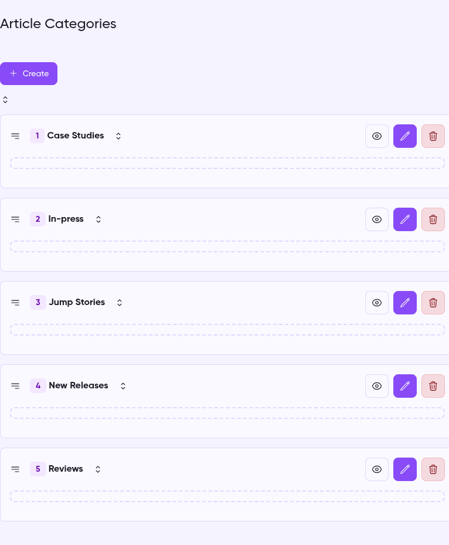
Категории статей — деревоКатегория статьи — форма
Рекомендации
Используйте понятные Name и Slug.
Для вложенных категорий задавайте Parent.
Порядок внутри родителя обычно задаётся через position.
Games (Игры)
Назначение: каталог игр (карточки/описания), которые могут выводиться на страницах/лендингах.
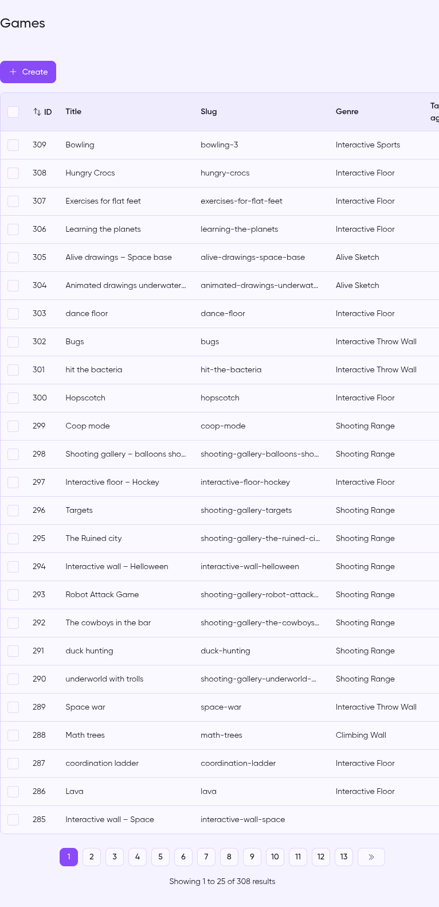
Games — список
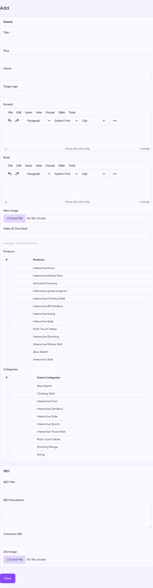
Games — форма
Ключевые поля (типично)
Title / Slug
Excerpt / Body
Hero image / Video
Categories (привязка к категориям игр)
Game Categories (Категории игр)
Назначение: категории для игр (используются для подборок/фильтрации).
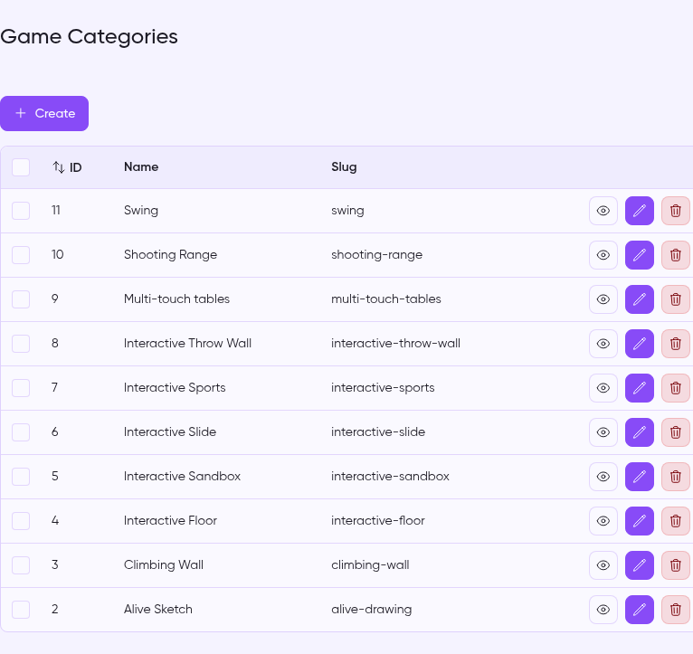
Game Categories — список
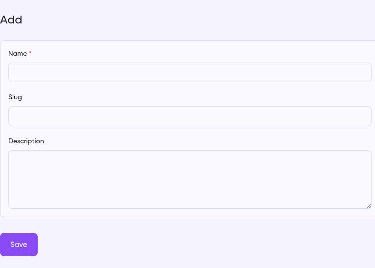
Game Category — форма
Products (Продукты)
Назначение: продуктовые страницы и данные о продукте (описание, медиа, связи с вариантами и формами).
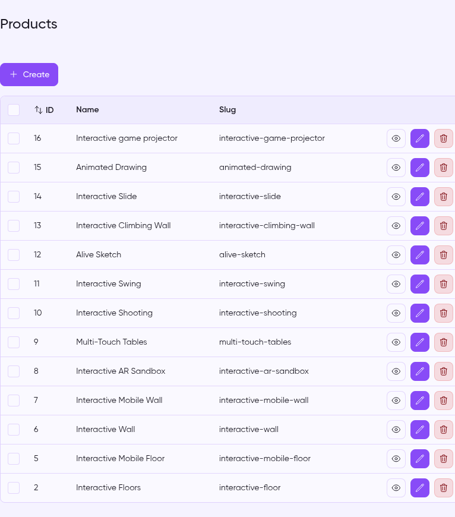
Products — список
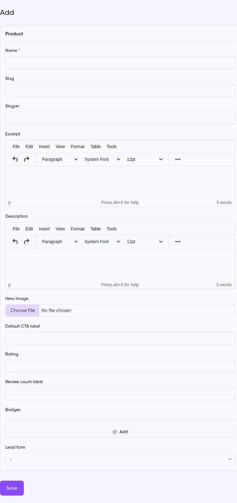
Products — форма
Ключевые поля (типично)
Name / Slug
Slogan / Excerpt / Description
Hero image
Form — форма, которая открывается в CTA (например, “Get a quote”).
Badges — бейджи/метки (если используются в дизайне).
Связи и порядок
У продукта обычно есть несколько Product Variants (варианты/комплектации).
Позиция (position) у вариантов влияет на порядок вывода.
Product Attributes (Атрибуты продукта)
Назначение: справочник атрибутов (характеристик), которые затем заполняются на вариантах продукта и используются в таблицах сравнения/спецификациях.
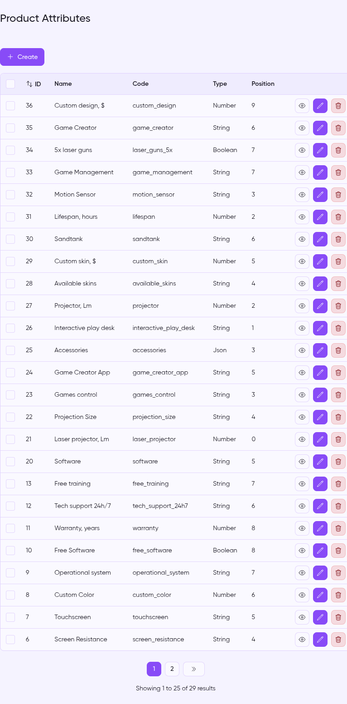
Product Attributes — список
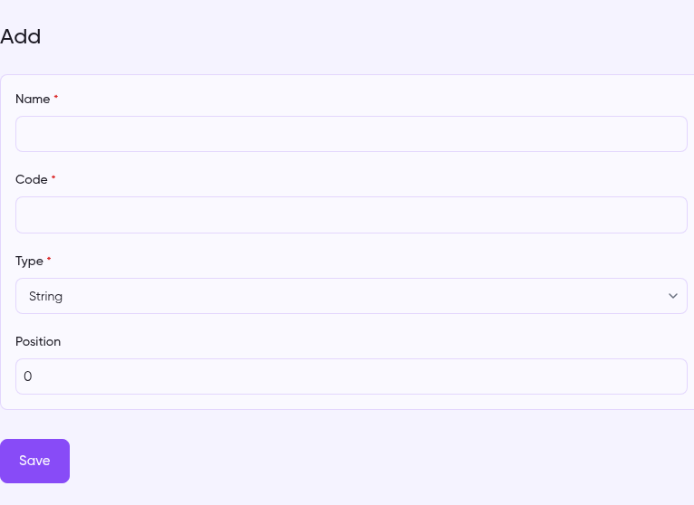
Product Attribute — форма
Рекомендации
Type определяет, как значение будет вводиться и отображаться (строка/число/булево/JSON).
Если используется code, старайтесь делать его стабильным, т.к. он может участвовать в выводе характеристик.
Product Variants (Варианты продукта)
Назначение: варианты одного продукта (например, комплектации/пакеты), с ценой, картинкой и набором атрибутов.
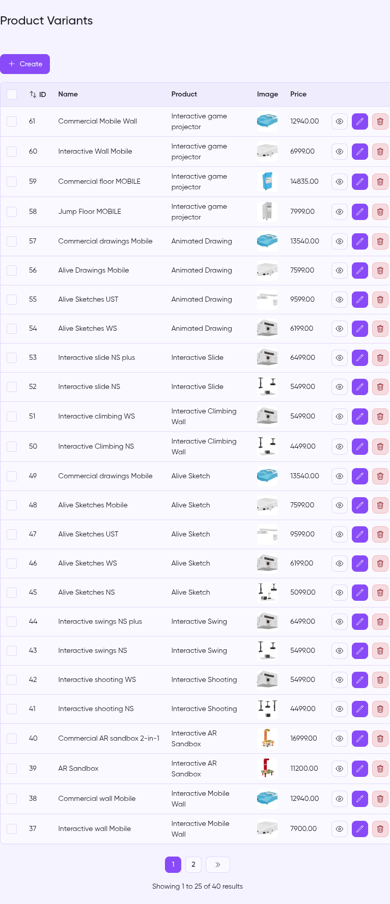
Product Variants — список
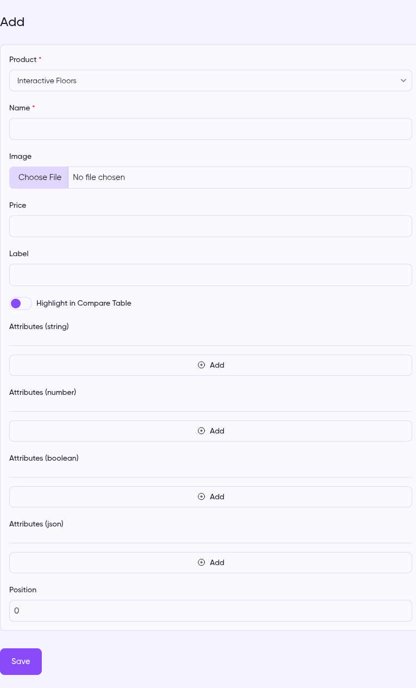
Product Variants — форма
Ключевые поля
Product — к какому продукту относится вариант.
Name — название варианта.
Image — изображение.
Price — цена (если используется).
Label — короткая подпись/бейдж.
Highlight in Compare Table — выделить вариант в таблице сравнения.
Attributes — значения характеристик, сгруппированные по типам (string/number/boolean/json).
Рекомендация: сначала заведите Product Attributes, затем заполняйте их значения на Product Variants.
Подсказка по JSON‑атрибутам: они часто задаются в формате key/value (например, список параметров), чтобы на сайте можно было красиво отрисовать спецификации.
Store Products (Товары магазина)
Назначение: товары магазина (если на сайте есть раздел store).
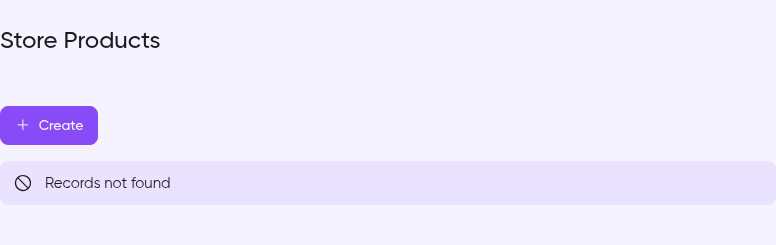
Store Products — список
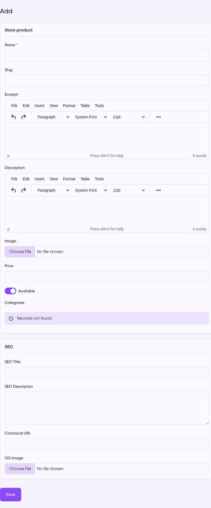
Store Product — форма
Store Categories (Категории магазина)
Назначение: дерево категорий магазина (иерархия).
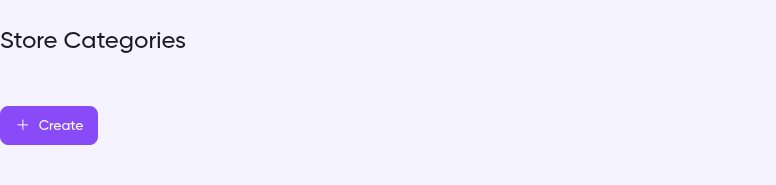
Store Categories — деревоStore Category — форма
Trusted Logos (Логотипы доверия)
Назначение: логотипы/знаки (например, “as seen on”, “trusted by”), которые выводятся на страницах сайта.
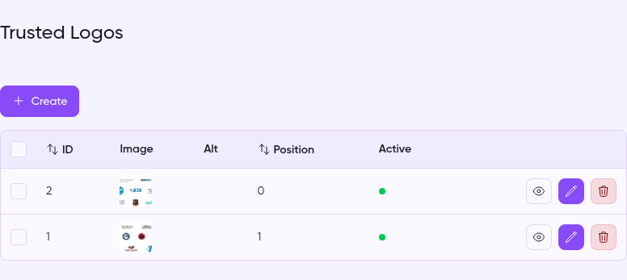
Trusted Logos — список
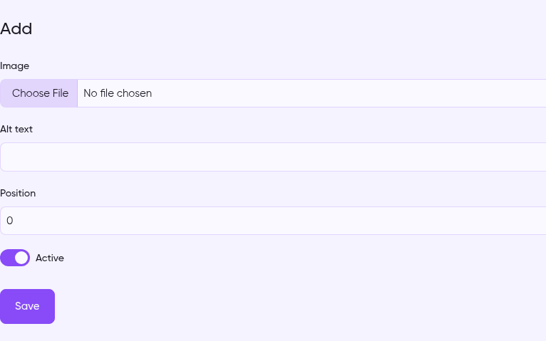
Trusted Logo — форма
Forms (Формы)
Назначение: шаблоны форм, которые используются на фронтенде (например, в модальном окне “Get a quote”). Здесь настраиваются поля, подписи, сообщения об успехе и многошаговые сценарии.
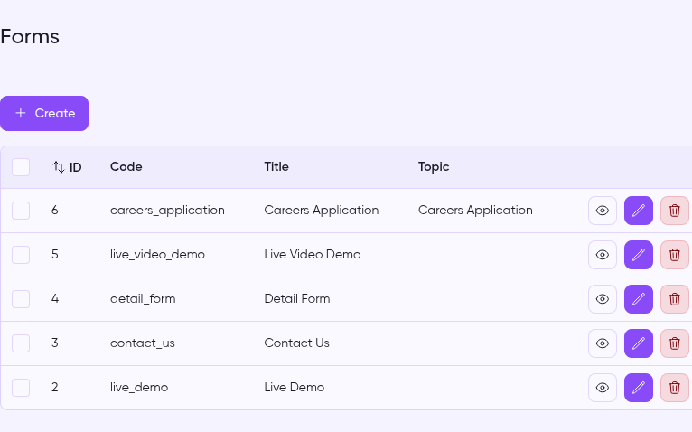
Forms — список
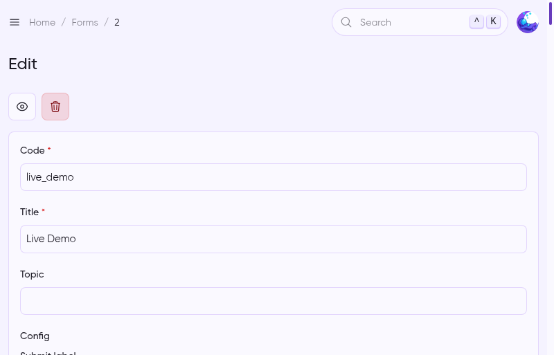
Forms — редактирование (верх формы)
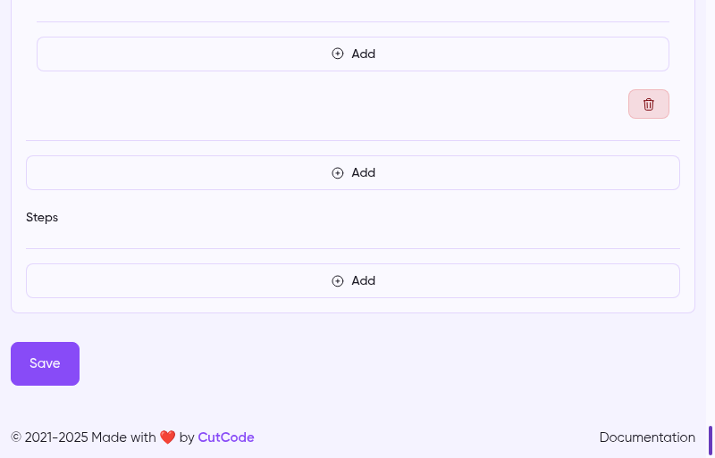
Forms — конфигурация полей/опций/шагов
Основные поля формы
Code — уникальный код формы (используется фронтендом), например live_demo.
Title — название формы (для админки/интерфейса).
Topic — тема (может подставляться в заявки по умолчанию).
Success message — сообщение после успешной отправки.
Disclaimer — текст под формой (политика/согласие и т.п.).
Config → Fields
Каждое поле формы задаётся строкой в Fields:
Name — системное имя (ключ).
Label — подпись для пользователя.
Type — тип поля (text, email, phone, date, file, textarea, select, checkbox, radio).
Required — обязательность.
Placeholder — подсказка внутри поля.
Options — варианты для select/checkbox/radio (Value/Label).
Важно про Options:
Value — то, что будет сохранено в заявку (payload).
Label — то, что увидит пользователь.
Практика: делайте Value коротким и стабильным (латиница/underscores), а Label — человеческим.
Config → Steps (многошаговая форма)
Если заполнены Steps, форма становится многошаговой:
у каждого шага есть заголовок и подписи кнопок “Next/Previous”,
у каждого шага есть собственный набор полей.
Рекомендация: если делаете многошаговую форму, поддерживайте логику “от простого к сложному”: на первом шаге — контактные данные, далее — уточняющие вопросы.
Поля типа file и date (важные нюансы)
file: при отправке формы файлы сохраняются и доступны в заявке (Leads) как вложения/превью.
date: на стороне сайта значения дат обычно передаются в формате YYYY-MM-DD.
Leads (Заявки)
Назначение: все отправленные пользователями формы (заявки). Здесь администратор видит, когда и откуда пришла заявка, какие поля были заполнены, и какие файлы прикреплены.
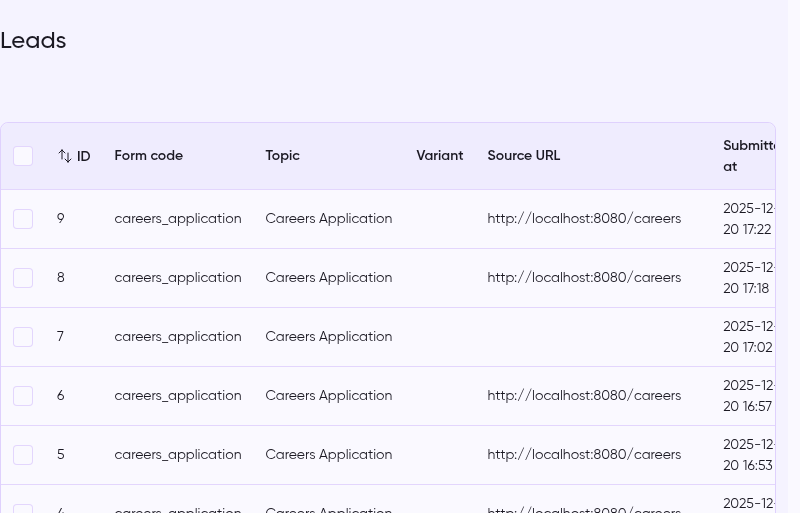
Leads — список
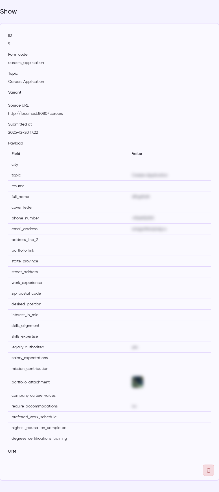
Lead — карточка заявки (пример)
Что смотреть в заявке
Form code — по какой форме отправлено.
Topic — тема заявки.
Source URL — страница, с которой отправили форму.
Submitted at — дата/время.
Payload — значения полей (ключ → значение).
UTM — маркетинговые метки (если были).
Вложения
Если в форме есть file‑поля, в Payload могут отображаться:
превью изображений,
ссылки на скачивание файлов.
Персональные данные
Раздел Leads обычно содержит персональные данные и файлы пользователей. Рекомендации:
ограничьте доступ к админ‑панели только ответственным сотрудникам,
не пересылайте скриншоты/экспорты заявок в открытых каналах,
при необходимости используйте внутренние процедуры хранения/удаления данных.
Site settings (Настройки сайта)
Назначение: единые настройки, которые используются в шапке/футере и на страницах (контакты, телефоны, соцсети, логотип и др.). Обычно это “одна запись” (singleton).
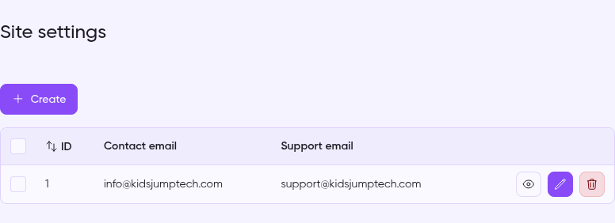
Site settings — список
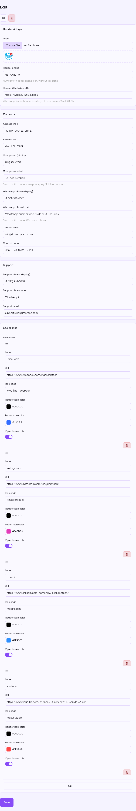
Site settings — форма
Что обычно хранится в настройках
В этом разделе, как правило, находятся “глобальные” данные сайта:
логотип,
телефоны/мессенджеры в шапке,
контакты в футере (адрес, часы работы, email),
ссылки на соцсети.
Рекомендация: после правок в настройках проверьте шапку и футер сайта.
Menus (Меню)
Назначение: список меню (например, header/footer) и их базовые параметры.
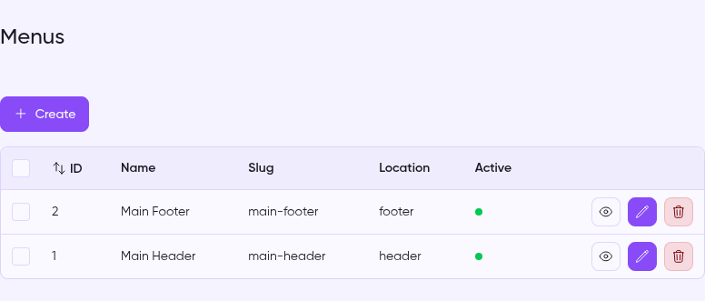
Menus — список
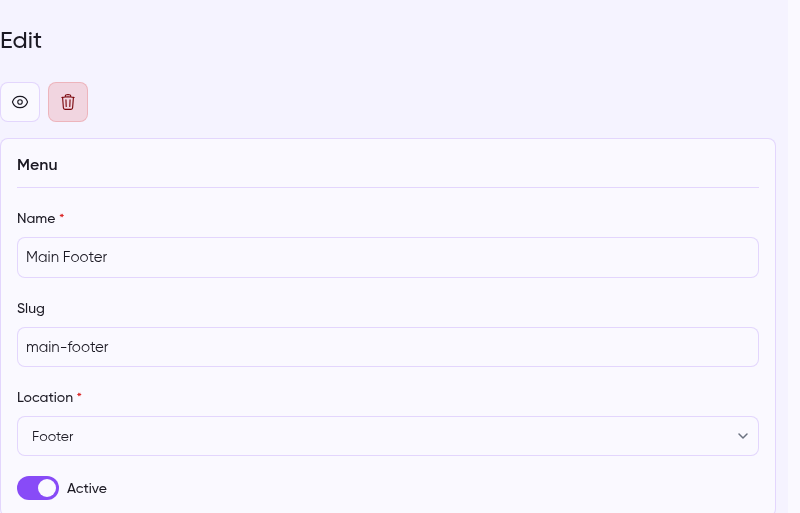
Menus — форма
Где используется
location=header — меню для шапки,
location=footer — меню для футера.
Если меню не отображается, проверьте:
активность (is_active),
правильную location,
наличие пунктов (Menu Items).
Menu Items (Пункты меню)
Назначение: пункты меню в виде дерева (родитель → дочерние пункты), используемые в шапке/футере.

Menu Items — дерево
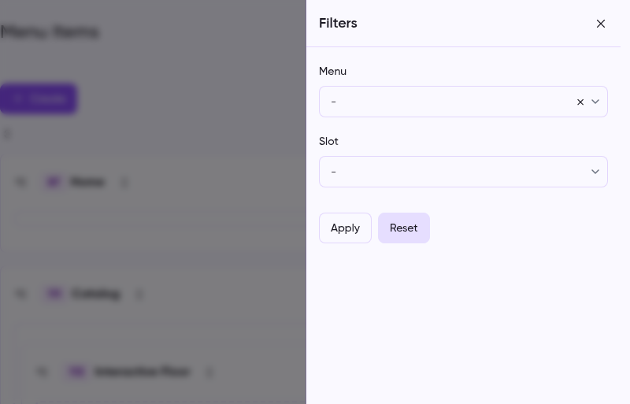
Menu Items — фильтры
Рекомендации
Если у пункта меню нет URL, он может отображаться как заголовок группы.
Проверяйте opens in new tab для внешних ссылок.
Следите за position — он влияет на порядок.
Reviews (Отзывы)
Назначение: управляемые отзывы, которые выводятся на сайте (карточки).
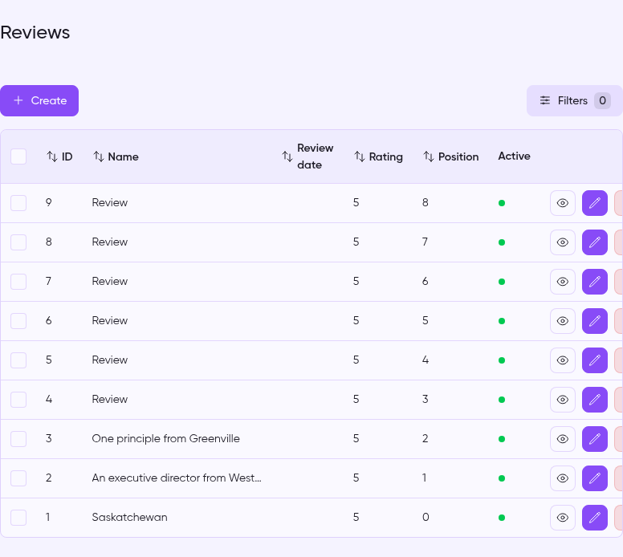
Reviews — список
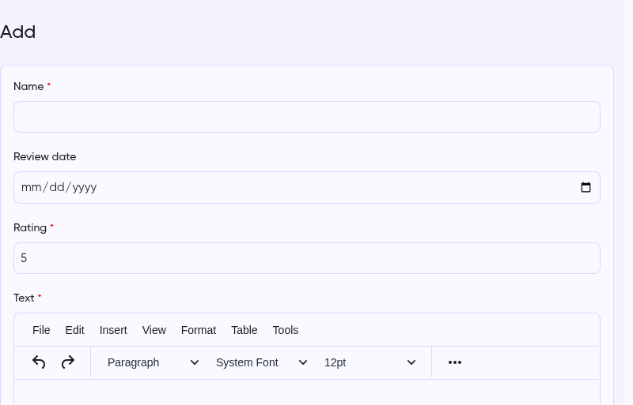
Reviews — форма
Рекомендации
Поддерживайте единый стиль текста (кратко, по делу).
Следите за активностью (is_active), если отзыв временно скрывается.
Sensory Room Bundles (Наборы)
Назначение: наборы (bundles), которые могут включать продукты, галерею, характеристики и кнопку CTA.
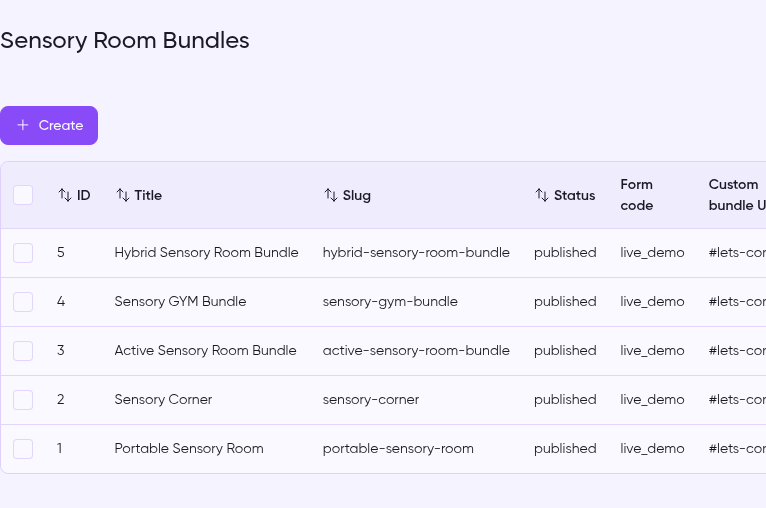
Sensory Room Bundles — список
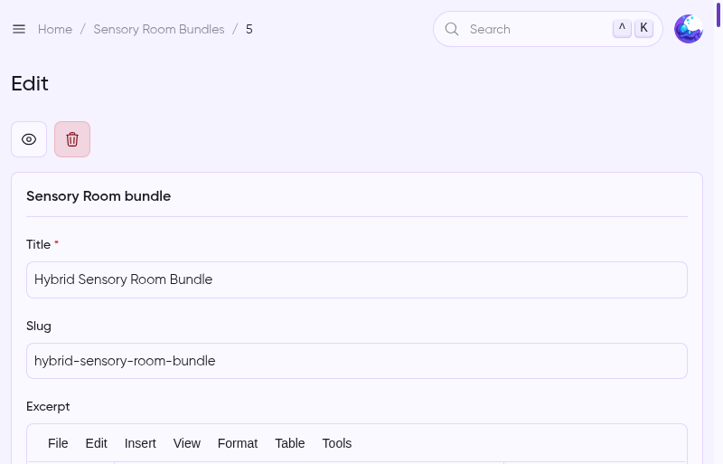
Sensory Room Bundle — форма
Что важно
Status/position обычно влияет на то, какие наборы и в каком порядке показаны на сайте.
Gallery/Specs формируют визуальную и текстовую часть на странице набора.
form_code (если есть) может использоваться для CTA‑формы на сайте.
Team (Команда)
Назначение: сотрудники/участники команды, которые выводятся на сайте (если предусмотрено).
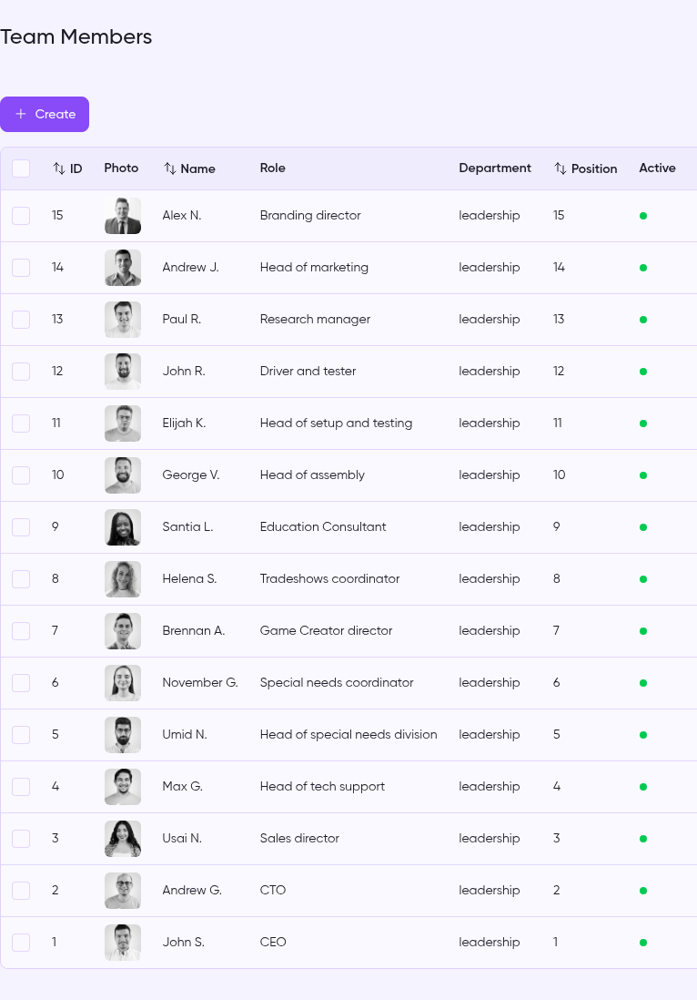
Team — список
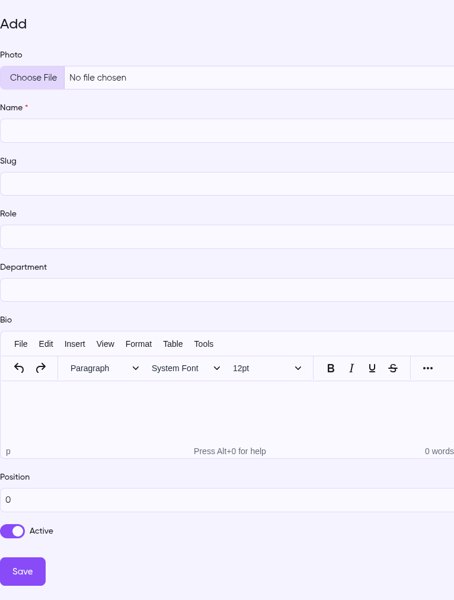
Team — форма
Технические примечания (для админов/поддержки)
Предупреждения в консоли браузера
При работе с редакторами (TinyMCE) может появляться предупреждение:
“TinyMCE is running in evaluation mode …”
Это предупреждение про лицензионный режим редактора. Оно не мешает редактированию контента, но является техническим пунктом, который стоит учесть при выпуске в продакшн (при необходимости — настроить license key или режим GPL, в зависимости от принятой лицензии).
System (Права доступа)
Раздел System нужен для управления доступом сотрудников к админ‑панели.
Admins (Администраторы)
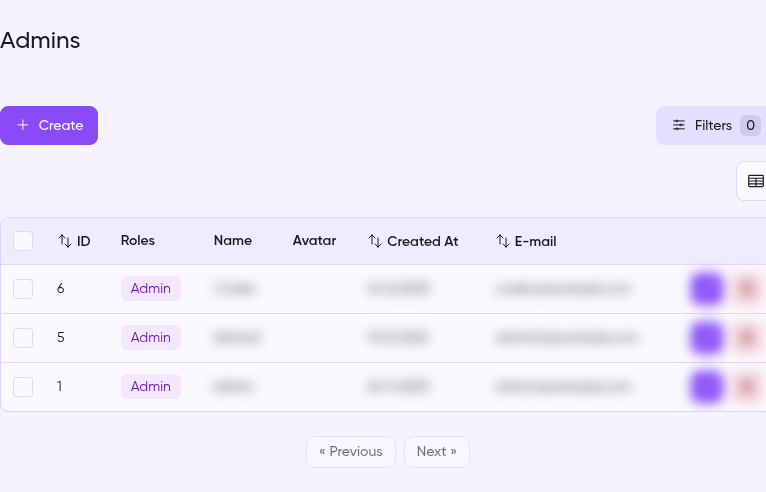
Admins — список (пример)
Рекомендации по безопасности:
выдавайте доступ только тем, кому он нужен по роли,
используйте уникальные пароли,
при увольнении/смене обязанностей удаляйте или блокируйте аккаунты.
Roles (Роли)
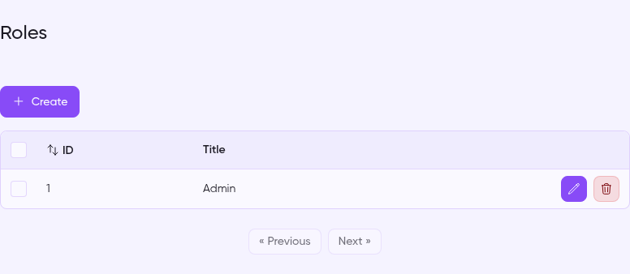
Roles — список (пример)
Роль определяет, какие разделы и действия доступны пользователю админ‑панели.
Приложение: быстрый чек‑лист перед публикацией
Заполнили обязательные поля (*).
Сохранили (Save) и убедились, что страница/сущность отображается корректно.
Для сущностей со статусом — проверили Status (published).
Проверили страницу на сайте (в новой вкладке по URL/slug).
Для форм — сделали тестовую отправку и проверили появление записи в Leads.